منصة اتصال واحدة تشرح أكثر من 15 خدمة بلغة يفهمها الناس: موقف يعرفه السائق، وخدمة تحلّه، وطريقة طلب واضحة. على إكس ولينكدإن وتيك توك، من الاستراتيجية إلى التقرير.

مشكلة شهاب ليست قلة ما تقدّمه بل كثرته: أكثر من 15 خدمة في خمسة مسارات لثلاث شرائح. العميل يصل وفي ذهنه موقف واحد، ويسأل ثلاثة أسئلة قبل أن يطلب. كل منشور ناجح يجيب عنها في ثوانٍ.
الفائدة بجملة واحدة، بلغة السائق لا بلغة الكتالوج.
الموقف الذي يجعل الخدمة مهمة الآن: حرّ، سفر، حادث، بيع، أو أسطول يتعطل.
خطوة الطلب واضحة في كل منشور، مع رابط لقناة الطلب المعتمدة.
وثلاث حقائق من الملف التعريفي تحكم كل ما سيأتي:
«تجربة واحدة للمركبة والتنقل» هي الميزة الحقيقية لكنها مجردة. المحتوى يحوّلها إلى مواقف يعيشها صاحب المركبة.
أكثر من 9 مراكز مملوكة، أجهزة تشخيص، غرف دهان، فريق فني، شركاء وعملاء بأسماء معروفة. أصول محتوى لم تُستثمر بعد.
الفرد يريد سهولة وطمأنينة، مسؤول الأسطول يريد تشغيلًا بلا توقف وتقارير، والشريك يريد قناة لعملاء جدد. لهذا وزّعنا الأدوار على المنصات.
أربع شرائح، ولكل شريحة سبب للمتابعة، ودليل يقنعها، وباب تنتقل منه للطلب. هذا ما يحدد المنصة والصيغة والدعوة.
ما بعد ذلك مسؤولية التطبيق والمراكز، لكن خطوة «التقييم والدعم» تعود إلى المنصات بشكل تعليقات ورسائل، ولها القسم التاسع. رحلة الشركة أطول: مسؤول الأسطول يرى شهاب على لينكدإن مرات، يتحقق من العملاء المرجعيين، ثم يفتح محادثة. لذلك يُقاس لينكدإن بالاستفسارات المؤهلة على مدى أشهر.
جملة يقولها الواحد لصاحبه حين يتكفّل عنه بالمشوار كله. نجعلها توقيع شهاب على كل المنصات: كل محتوى يبدأ بموقف يعرفه الجمهور، ويعرض الخدمة التي تحلّه، وينتهي بـ«خلّها على شهاب» ورابط الطلب.
«خلّها على شهاب» تختم كل موقف يومي وكل رد على سؤال.
سلسلة فيديو باسم #خلها_على_شهاب، حلقة لكل موقف، والوجوه من فريق شهاب.
صياغة رسمية للفكرة نفسها: «أسطولك في منظومة واحدة»، بالوقائع والأرقام.
شهاب تتكلم كما يتكلم فني تثق به: واضح، مطمئن، لا يبالغ ولا يُخوّف. لهجة سعودية خفيفة على إكس وتيك توك، وفصحى مبسّطة على لينكدإن. «سيارتك» للفرد و«مركباتك» للشركات.
نقدّم كل خدمة بقالب ثابت يجيب أسئلة العميل الثلاثة ويضيف دليلًا يراه. مع التكرار يتعلم الجمهور قراءة محتوى شهاب بسرعة أيًا كانت الخدمة. المجموعات الخمس من خريطة خدمات شهاب، وبطاقة واحدة من كل مجموعة كمثال.
البطاقة تُنتج بثلاث صيغ: تصميم ثابت لإكس، شريحة في كاروسيل لينكدإن، وافتتاحية 5 ثوانٍ في فيديو تيك توك. القالب يُسلّم لشهاب قابلًا للتعديل.
كل منشور ينتمي لركيزة واحدة، وكل ركيزة تخدم هدفًا من أهداف البريف. التوزيع يختلف بحسب دور المنصة، ويُراجع كل ربع بناءً على الأداء.
لكل منصة دور واحد ونبرة واحدة ومؤشر واحد يحكم عليها. المحتوى لا يُنسخ بين المنصات بل يُكيّف: الفكرة نفسها فيديو 30 ثانية على تيك توك، ومنشور بتصميم على إكس، وكاروسيل على لينكدإن.
الحساب قائم (@ShihabCompany) وهو قناة خدمة عملاء بقدر ما هو قناة تسويق. الرد على المنشنات داخل ساعات العمل هو المحتوى الأهم هنا. محتوى لحظي مرتبط بالطقس والإجازات والمناسبات الوطنية.
الصفحة تحتاج أن تبدو كشركة تشغيل لا كتطبيق فقط. نقترح تفعيل حساب شخصي لقيادي واحد على الأقل، لأن الوصول العضوي للأشخاص يفوق صفحات الشركات بفارق كبير.
الملف التعريفي لا يذكر حساب تيك توك فنفترض أننا نطلقه. نرشّح فنيًا أو اثنين من فريق شهاب ليكونا وجه الحساب. كل فيديو بترجمة عربية على الشاشة لأن أغلب المشاهدة بلا صوت.
كتبناها وصممناها لتُقرأ كما ستظهر على المنصة. كلها نماذج مقترحة غير منشورة، والمعلومات الفنية فيها تُراجع مع مختصي شهاب قبل النشر. القوالب بألوان شهاب وشعارها من الملف التعريفي: النبيذي للأرضيات، والمرجاني للدعوة فقط.
لغة الحركة: الانتقال بين المشاهد في كل الفيديوهات والموشن يستخدم منحنى شعار شهاب: يكبر حتى يملأ الإطار، ثم يكشف المشهد التالي. توقيع حركي ثابت يجعل محتوى شهاب يُعرف قبل أن يُقرأ.
الثقة تأتي من الصورة الحقيقية. يوما تصوير في الشهر يغطيان المنصات الثلاث إذا خُطّط لهما جيدًا. المبدأ: نصوّر مرة وننتج عشرًا، ولا نصوّر شيئًا بلا قائمة لقطات معتمدة مسبقًا. لا صور مخزون.
تيك توك والردود السريعة. الطبيعية هنا ميزة لا عيب. 9:16.
فيديوهات لينكدإن، قصص العملاء، بنك صور المراكز والفريق. 1:1 و4:5 لإكس ولينكدإن. إضاءة طبيعية وألوان هادئة.
خريطة الخدمات، رحلة الطلب في التطبيق، التليماتكس والمحفظة، الأرقام. لما لا يُصوّر، لا بديلًا عما يُصوّر.
كل تعليق فرصة طلب أو ثقة. نرد بصوت شهاب، ونحوّل الاستفسار إلى قناة الطلب، ونصعّد ما يحتاج تدخلًا قبل أن يكبر. الأزمنة مقترحة وتُعتمد في اتفاقية الخدمة بحسب النطاق المالي.
نبني قاعدة الأجوبة مع شهاب في الشهر الأول: سؤال وجواب لكل خدمة، المناطق المغطاة، ساعات العمل، سياسة النقاط، وما لا يجوز قوله. تُحدّث شهريًا وهي مصدر أفكار «المختص يجاوب». المساعدة على الطريق حالة خاصة: الرد التلقائي خارج التغطية يحمل رقم الطوارئ الرسمي مباشرة.
نراقب ذكر شهاب بالعربية والإنجليزية حتى بلا منشن، وموضوعات القطاع (أسعار الصيانة، الورش، السيارات الكهربائية، الفحص قبل الشراء) لأنها فرص دخول طبيعي في النقاش. ملخص الإنصات جزء ثابت من التقرير الشهري.
جهات المقارنة في الصيانة تختلف عن البيع والشراء أو العناية. نبني المقارنة لكل مجموعة على حدة، ونركّز على أسلوب شرح الخدمة والمحتوى والتصوير والنشر، ثم نستخلص فرصًا تناسب شهاب لا ما يستحق التقليد.
المخرج: لكل مجموعة ثلاثة أشياء فقط: ما يفعلونه جيدًا ونقدر نفعله أفضل، وما لا يفعله أحد وهو فرصة لشهاب، وما يبدو ناجحًا لكنه لا يناسب شهاب. كل فرصة تتحول إلى فكرة محتوى في التقويم التالي.
نقيس كل هدف من أهداف البريف الخمسة بمؤشر واحد إلى اثنين بمصدر معروف. نقيس خط الأساس في الشهر الأول، ونعتمد المستهدفات معكم نهاية الشهر الثاني. أي رقم نعد به اليوم دون نقطة بداية سيكون تخمينًا.
ما لا نضعه في أعلى التقرير: عدد المتابعين والإعجابات. نذكرها لكنها لا تقود القرار.
التجربة المستمرة: كل شهر نختبر متغيرًا واحدًا معلنًا مسبقًا ونسجل النتيجة في سجل تعلّم دائم تملكه شهاب.
خمس مراحل وأربع بوابات مراجعة ربعية. الشهر الأول تأسيس بلا نشر كثيف، وكل بوابة تعيد ضبط الركائز والمستهدفات قبل المرحلة التالية. كل الخدمات تأخذ دورها في الضوء خلال السنة، وتواريخ المناسبات الهجرية تقريبية وتُعدّل بحسب تاريخ التوقيع.
الحملة نطاق مستقل كما حدد البريف، لكننا نقترح الاتجاه من الآن حتى يبني المحتوى اليومي أرضيتها. المسارات الثلاثة تشترك في «خلّها على شهاب» وتختلف في الهدف والتوقيت.
نرشّح البدء بالمسار أ لأنه يعطي نتائج قابلة للعد في موسم طبيعي للطلب، ثم المسار ب لبناء العلامة. الفكرة النهائية والمخرجات والميزانية تُقدّم في عرض مستقل عند الاتفاق على المسار.
فريق ثابت يعرف شهاب بالاسم، نقطة تواصل واحدة من كل جهة، ومسار اعتماد بمستويين حتى لا يتوقف النشر اليومي على انشغال الإدارة. الحجم الشهري مقترح ويُضبط مع النطاق المالي.
إيقاع الاجتماعات: أسبوعي 30 دقيقة لاعتماد الأسبوع القادم، شهري للتقرير والتقويم، وربع سنوي للاستراتيجية. الأدوات: لوحة تقويم واعتماد مشتركة، أداة جدولة ونشر، أداة رصد، مكتبة محتوى سحابية، لوحة بيانات حية. الحسابات تبقى ملكًا لشهاب وتُدار بصلاحيات لا بمشاركة كلمات المرور.
هذا العرض مبني على البريف والملف التعريفي فقط، ولذلك نسجل ما افترضناه صراحة حتى يُصحّح في اجتماع الانطلاق.
أربع خطوات تفصل بين هذا العرض وأول منشور من شهاب بـ«خلّها على شهاب»:
العرض المالي ونطاق العمل التفصيلي يُسلّمان في مستند مستقل بعد اعتماد هذا الاتجاه، حتى يُسعّر ما اتُفق عليه فعلًا لا ما افتُرض.
تسويق ثلاثمائة وستين درجة مؤسسة وطنية في مجال الدعاية والتسويق، تعمل على نتائج ملموسة للعملاء من خلال استراتيجيات مبنية على فهم السوق السعودي وحلول إبداعية قابلة للقياس.